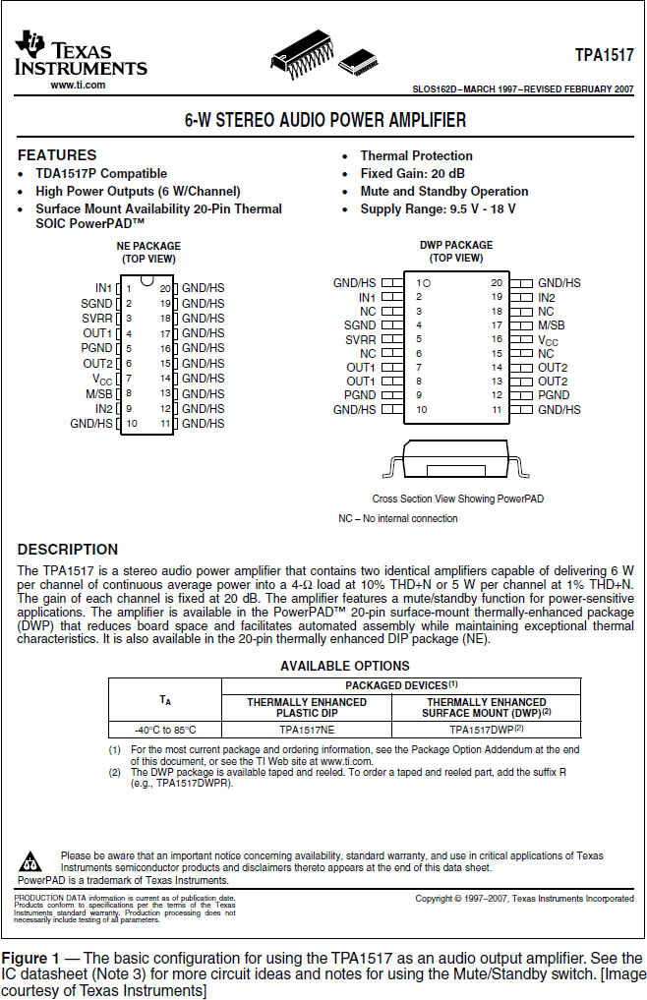
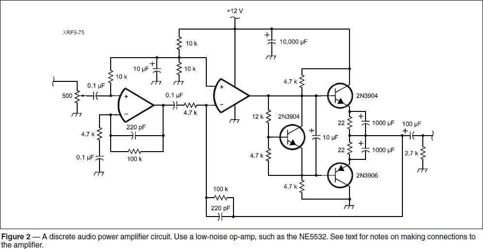

Experiment #167 — Clean Audio for Comfortable Listening
Throughout my years in ham radio, I’ve frequently heard something like, “It’s a good receiver, but it just sounds harsh (or hissy).” Also popular is, “That radio just wears out my ears.” And the ever-present, “The signals all sound like mush.” Some of those might be symptoms of problems elsewhere in the receive chain, like in the Automatic Gain Control (AGC) sub-system. Quite often, though, the problems stem from a weak audio output stage.
The latest radios cost hundreds (if not thousands) of dollars and have sophisticated RF electronics and processing power. There should be an equal amount of attention paid to the actual interface with you, the user, and that is the audio output stage.
Frequency Response
In bygone days when “hi-fi sets” used vacuum tubes, frequency response was a serious part of “specs-man-ship.” Bigger (heavier) audio output transformers helped extend the bottom end below 100 Hz. Higher-gain tubes and circuits extended the high end above 10 kHz. There were actually meaningful differences between the frequency response of different models. Today’s integrated circuits (ICs) offer responses from well below 10 Hz to 20 kHz and beyond human hearing. Problem solved?
Not really. A communications receiver can actually have a frequency response that’s too wide. Maybe for broadcast-quality AM, a wide response is necessary for that “warm” sound AM operators tout, but for HF SSB/CW, it just allows a lot of noise and interference into your “channel.” On VHF+ FM, too much bass response means you’ll begin to hear those no-longer-sub-audible tones. Too much high-frequency audio and noise will drive you crazy. You need a response appropriate to what you’re trying to copy and no more; 200 to 5000 Hz is more than adequate, because IF filtering will limit signal audio response to much less than that.
Distortion
Another gremlin of audio stages is distortion, specified as total harmonic distortion (THD). Measured for a single-tone sine wave at a specific power level, THD is the sum of the power of all distortion products divided by the power of the fundamental frequency. Home entertainment audio gear sports THD of far less than 1%, but a typical ham transceiver specifies THD as high as several percent for a specific power level and load impedance. Is this a bad thing?
A lot of THD is definitely a bad thing, as it makes the receiver sound harsh or shrill even if the received signal is clean. You can see distortion by viewing the audio output of your rig with PC-based spectrum analyzer software such as DL4YHF’s Spectrum Lab.1 (Use the speaker output for lowest output impedance.) Tune in a steady carrier, such as WWV received in USB or LSB mode, and experiment with different audio levels, watching the relative amount of harmonics as you change the volume. Place different loads on the output by using a splitter to connect one or more paralleled speakers to the output. You’ll see the harmonic content increasing with heavier loads and higher volume.
How can you tell if your radio has an audio problem? The Hands-On Radio web supplement for this column (www.arrl.org/hands-on-radio) has a short set of diagnostics.
Hiss
Receiver hiss is a high-frequency “white” or wide-spectrum noise generated by the internal electronic devices. It is present whenever the receiver is turned on, regardless of what external noise is coming in through the antenna connector. While the hiss may not be loud, over long periods, it is fatiguing as it continually stimulates your inner ear and the auditory system. Rather than apply external filters, the best way to remove the hiss is by rolling off gain above a few kHz in the audio circuitry.
Audio Power Output Stages
For simple construction, it’s been hard to beat the venerable LM386 audio power amplifier IC.2 It has been used for the audio output stage of simple radios for many years, and the price is certainly reasonable. But it can be hissy with a frequency response of 300 kHz and has a ho-hum THD of 0.2% at only 125 mW of output power. This is okay for driving light headphones or a small speaker, but we can do better.
The proliferation of portable music players drives many improvements in audio output electronics. For example, the TPA1517 is made specifically to drive stereo headphones or speakers.3 Its THD is still 0.1% at an output power of 1 W, which is plenty to drive even full-size headphones and small speakers. (This comes at the price of higher supply current over a pair of LM386 ICs.) Figure 1 shows the schematic for a bare-bones amplifier using this chip. The datasheet has additional circuit ideas.

There are many other audio output ICs made for driving low (4 Ω) and medium (32 Ω) load impedances. You can find them by searching for audio amplifiers from distributors like Digi-Key Electronics (digikey.com) and Mouser Electronics (mouser.com). From the many options, optimize your selection for power consumption, power output, or some desirable set of features. For example, the TPA1517 has a mute/standby control input, perfect for use in a transceiver.
Experimenters might also want to build an audio amplifier out of discrete components to become more familiar with using transistors. In that case, Figure 2 shows an audio power stage from Experimental Methods in RF Design.4 This is a high-gain (46 dB, x400) amplifier that can provide clean audio to headphones or small speakers. Note the parallel combination of a 100 kΩ and 220 pF capacitor for both the input buffer stage and in the feedback loop from the output to the middle op-amp. This combination rolls off signals above 7 kHz (approximately 1⁄2πRC) to limit hiss and high-frequency noise. A low-noise op-amp, such as the NE5532, should be used, as well.

Regardless of which design or IC you use, good wiring practices are required. Speaker or headphone connections should be made directly to the circuit board — do not use the chassis as the only signal return. If you are building the amplifier in a metal enclosure and using a stereo headphone jack, the body (sleeve contact) of the jack should be securely connected to the enclosure to keep common-mode RF on the cable outside. Run a lead from the jack’s ground terminal to the common ground point of the amplifier.5 A ferrite bead or two on the audio output lead helps keep RF out of the amplifier, as well.
Headphones
Let’s not forget about the actual final audio stage — the headphones or speaker. All this fine audio is wasted if you’re not using good-quality headphones and speakers. Noise-canceling headphones are also beneficial, and they should be comfortable — with audio this clean, you’ll be wearing them for many hours, enjoying what the band really sounds like!
Notes
1www.qsl.net/dl4yhf/spectra1.html
2www.ti.com/lit/ds/symlink/lm386.pdf
3www.ti.com/lit/ds/symlink/tpa1517.pdf
4W. Hayward, W7ZOI, R. Campbell, KK7B, R. Larkin, W7PUA, Experimental Methods in RF Design, ARRL, 2003.
5J. Brown, K9YC, “A Ham’s Guide to RFI, Ferrites, Baluns, and Audio Interfacing,” Rev 5a, audiosystemsgroup.com/RFI-Ham.pdf.